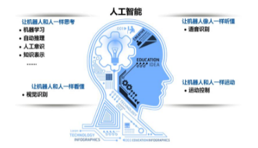
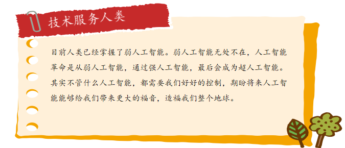
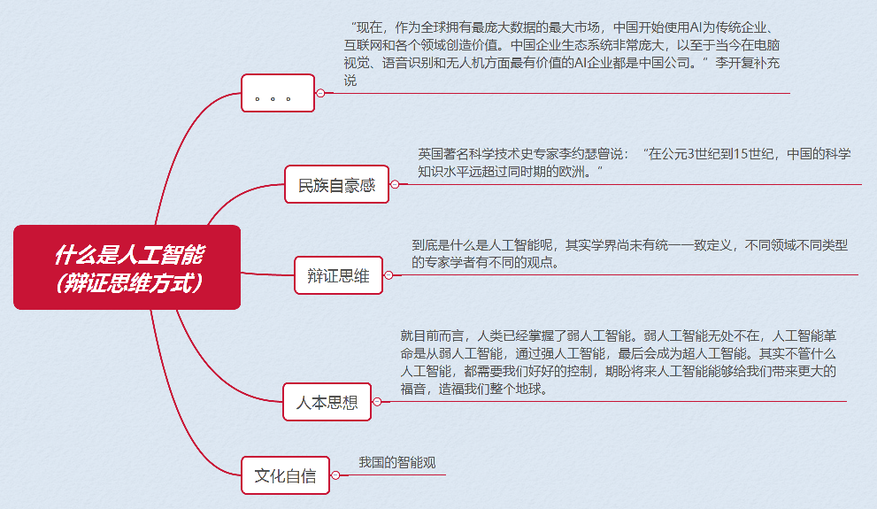

任务二 现代人工智能
【任务描述】
人工智能并不是一项新技术，人工智能概念诞生于1956年，已有半个多世纪的发展历程。作为现在最前沿的交叉学科，其实学界尚未有统一—致定义，大家对于人工智能的定义有着不同的理解。
【任务实施】
2.1人工智能定义
（1）字典里的“人工智能”
【新华词典在线版】计算机科学的一个分支。研究应用计算机来模拟人类的某些智力活动，从而代替人类的某些脑力劳动。是一门涉及数学、心理学、生物学、语言学、经济学、哲学和法律学等的综合性学科。主要研究模式识别、学习过程、探索过程、推理过程等。人工 : ①人为；人做的。与“自然”、“天然”相对：人工降雨｜人工取火｜根须茁壮，枝叶繁茂，岂是人工做得出来的。 ②人力；用人力做的工。与“机械力”相对：人工开成的渠｜拖拉机来不及运，还得用人工挑。 ③劳工；佣工：派人工进山砍伐｜贫居乏人工，灌木荒余宅。 ④量词。一个人工作一天的量：做一张书桌要用三个人工｜算一下打口井要多少人工。智能: 1.智谋与才能。 2.指智力。 【牛津字典】一种能够执行通常需要人类智能的任务的计算机系统理论和发展技术，如视觉感知、语音识别、决策和翻译。
（2）百科里的“人工智能”
维基百科中的定义：“人工智能就是机器展现出来的智能，所以只要机器有智能的特征和表现，就应该将其视为人工智能。” 百度百科中的定义：“人工智能是研究、开发用于模拟、延伸和扩展人的智能的理论、方法、技术和应用系统的一门新的技术科学。”并认为人工智能是计算机科学的一个分支。现阶段，比较热门的研究方向包括机器人、语音识别、图像识别、自然语言处理等几个方面。
（3）《人工智能，一种现代方法》里的“人工智能”
人工智能是类人行为，类人思考，理性的思考，理性的行动。人工智能的基础是哲学，数学，经济学，神经科学，心理学，计算机工程，控制论，语言学。
（4）《人工智能标准化白皮书（2018年）》里的人工智能
人工智能是利用数字计算机或者由数字计算机控制的机器，模拟、延伸和扩展人类的智能，感知环境、获取知识并使用知识获得最佳结果的理论、方法、技术和应用系统。
（5）人工智能之父眼里的“人工智能”
人工智能之父约翰麦卡锡的说法，它是“制造智能机器的科学与工程，特别是智能计算机程序”
（6）研究领域的“人工智能”
人工智能是研究、开发用于模拟、延伸和扩展人的智能理论、方法、技术及应用系统的一门新的技术学科，它是计算机科学的一个分支。
（7）应用领域的“人工智能”
人工智能是一门综合学科，主旨是研究和开发出智能实体，在这一点上它属于工程学。工程的一些基础学科自不用说，数学、逻辑学、归纳学、统计学、系统学、控制学、工程学、计算机科学，还包括对哲学、心理学、生物学、神经科学、认知科学、仿生学、经济学、语言学等其他学科的研究，可以说这是一个集数门学科精华的尖端学科中的尖端学科。
2.2人工智能的四大流派
将思考和行动组合起来就是四种情况，即机器是否能像人一样思考，机器是否可以合理的思考，机器是否能像人一样行动，机器是否可以合理的行动，这四种定义派生出了人工智能四个流派。

（1）像人一样思考派
像人一样思考派，代表就是图灵。1950年，艾伦·图灵(Alan Turing)介绍了一项测试，以检查机器是否能像人类一样思考，这项测试称为图灵测试。在这个测试中，图灵提出如果计算机可以在特定条件下模仿人类的反应，那么可以说计算机是智能的。图灵在其1950年的论文“计算机器和智能”中介绍了图灵测试，该论文提出了“机器能想到吗？”的问题。图灵测试基于派对游戏“模仿游戏”，并进行了一些修改。这个游戏涉及三个玩家，其中一个玩家是计算机，另一个玩家是人类响应者，第三个玩家是人类询问者，与其他两个玩家隔离，他的工作是找到哪个玩家是其中两个玩家。测试结果并不取决于每个正确答案，而只取决于其答案与人类答案的接近程度。允许计算机尽一切可能通过询问器强制进行错误识别。简单来说就是如果人类询问者在提出一些书面问题后不能区分是人还是计算机在回答，则该计算机通过图灵测试。

（2）像人一样行动派
将认知模型化方法，比较典型的是通用问题解决器GPS，核心是希望模拟人解决问题的过程。
（3）合理的思考
合理的思考是逻辑学、人工智能中的逻辑主义流派，鼻祖是亚里士多德，他提出了逻辑的方法期望通过逻辑的方法得到最合理的结论，期望通过形式化模型表达这个世界，借助严格的规则完成推理，但我们这个世界实在是太复杂，一个看上去很简单的问题的形式化描述也可能是一个极其困难的问题，需要经过大量的简化，并且很多知识并不是百分之百确定的，这是逻辑派遇到的主要困难。
（4）合理的行动
实现完美的合理性--即总做出正确的事情，融合了逻辑派和图灵派的优势，是目前人工智能研究和工程的主要方法。
2.3人工智能三种形态
人工智能可以分为弱人工智能、强人工智能、超人工智能三个级别，弱人工智能是三个分级当中最低级，目前弱人工智能应用非常广泛。
（1）弱人工智能
弱人工智能的英文单词就是Artificial Narrow Intelligence,简称为ANI,弱人工智能是擅长于单个方面的人工智能。比如有能战胜象棋世界冠军的人工智能阿尔法狗，但是它只会下象棋，如果我们问它其他的问题，它就不知道怎么回答了。只擅长单方面能力的人工智能就是弱人工智能。 
（2）强人工智能
强人工智能的英文单词就是Artificial General Intelligence,简称AGI,这是一种类似于人类级别的人工智能。强人工智能融在各方面都能和人类比肩的人工智能，人类能干的脑力活它都能干。创造强人工智能比创造弱人工智能难得多，我们现在还做不到。强人工智能是一种宽泛的心理能力，能够进行思考、计划、解决问题、抽象思维、理解复杂理念、快速学习和从经验中学习等操作。强人工智能在进行这些操作时应该和人类一样得心应手。
（3） 超人工智能
超人工智能的英文单词就是Artificial Superintelligence,简称ASI,科学家把超人工智能定义为在几乎所有领域都比最聪明的人类大脑都聪明很多，包括科学创新、通识和社交技能。超人工智能可以是各方面都比人类强一点，也可以是各方面都比人类强万亿倍的。
2.4 人工智能的三个方面
人工智能发展过程中，不同学科背景的人工智能学者对它有着不同的理解。综合起来，我们可以从“能力”和“学科”和“实用”三个方面对人工智能进行定义。从能力角度看，人工智能是指用人工的方法在机器上实现的智能；从学科的角度来看，人工智能是研究如何构造智能机器或智能系统，使它能模拟、延伸和扩展人类智能的学科；从实用的角度来看，人工智能是指用机器实现所有目前必须借助人类智慧才能实现的任务。
（1）计算智能
机器可以像人类一样存储、计算和传递信息，帮助人类存储和快速处理海量数据，有赖于算法的优化和硬件的技术进步。这一阶段是感知智能和认知智能的基础。
（2）感知智能
机器具有类似人的感知能力，如视觉、听觉等，不仅可以听懂、看懂，还可以基于此做出判断并做出反馈或采取行动，即“能听会说，能看会认”。目前研究较多、成果显著的包括图像识别、语音识别等技术，国内外人工智能技术发展均集中于这一阶段。
（3）认知智能
机器能够像人一样主动思考并采取行动，全面辅助或替代人类工作，是人工智能的最高级形态，也是行业未来的着力点。
【任务拓展】
1、讨论我国的算盘是人工智能吗？为什么？
政策聚焦 